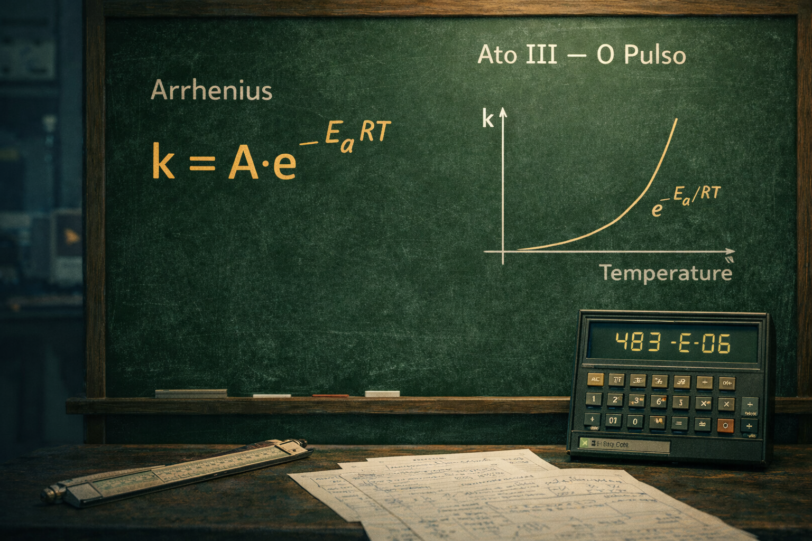

ATO IV — Operação (A Planta)
Série RU 1991: A Essência da Soberania · Episódio 03
A planta em marcha: controle e instrumentação
Na sala de controle, a tensão é a mesma desde 1991: a mão no ajuste das válvulas e o olho no tempo de residência. TIC-101 regula a temperatura; FIC-202, o fluxo que define τ; PIC-301, a pressão; LIC-401, o nível — e, com ele, a conversão X que aparece no visor. O P&ID não é decoração: é o mapa em que cada variável encontra seu lugar.
Em 1991 o controle era manual e intuitivo — o operador sentia o processo no punho da válvula e na leitura do mostrador. Hoje a automação fria ajusta setpoints em milissegundos; naquele tempo, estabilizar o fluxo era arte e ofício. Quando as variáveis oscilam, teoria vira mapa e o terreno é a planta: quem não mantém o equilíbrio perde o reator. τ e X não são números soltos — são o que a malha de controle sustenta, no rigor de 1991.
Legenda LinkedIn (engajamento)
Hashtags
Navegação da série (binge-reading)
Chamada · Ep.01 · Ep.02 · Ep.03 · Ep.04 — Ato V · Epílogo
Contato
- E-mail: suporte@caracore.com.br
- Site: www.caracore.com.br
- LinkedIn: Cara Core Informática
Ato I — O Portal · Ato II — A Camada Invisível · Ato III — O Pulso da Criação · Ato IV — Operação. Próximo: Ato V (Soberania/Dossiê).
Seguir no LinkedIn
Artigo publicado em 5 de abril de 2026
© 2026 Cara Core Informática. Todos os direitos reservados.